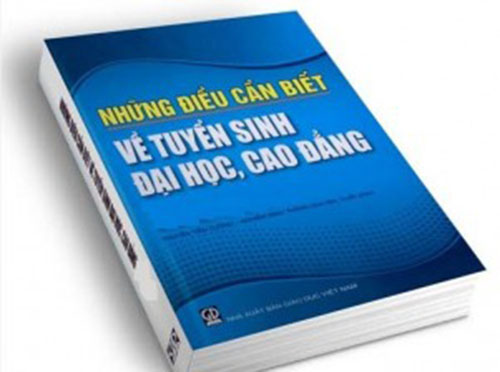

Thông tin tuyển sinh đại học - cao đẳng hệ chính quy năm 2016

Lần cập nhật cuối lúc Thứ tư, 06 Tháng 4 2016 10:28 Viết bởi Administrator Thứ ba, 29 Tháng 3 2016 10:09
Bộ Giáo dục và Đào tạo công bố các thông tin liên quan đến tuyển sinh đại học, cao đẳng hệ chính quy năm 2016 nhằm đáp ứng nhu cầu của thí sinh, phụ huynh và xã hội. Thông tin tuyển sinh này bao gồm:

1. Các thông tin tuyển sinh cụ thể của các đại học, học viện, các trường đại học, cao đẳng trong toàn quốc do các trường cung cấp và chịu trách nhiệm được cập nhật đến 15h00 ngày 28/3/2016;
2. Danh sách các xã Khu vực 1 (KV1) hoặc các xã đặc biệt khó khăn (hoặc có thôn đặc biệt khó khăn);
3. Danh mục các trường THPT và tương đương, khu vực của trường;
4. Bảng phân chia các khu vực tuyển sinh theo đơn vị hành chính thuộc tỉnh;
5. Mã tỉnh, quận huyện đăng ký dự thi.
Các thông tin này sẽ thường xuyên được cập nhật, bổ sung sau khi các trường hoàn thành việc xác định chỉ tiêu tuyển sinh theo quy định hiện hành.
Trân trọng thông báo./.
* Nội dung chi tiết đề nghị xem tại tệp đính kèm ./.
- 04/06/2016 07:51 - Danh sách thí sinh thi tuyển sinh 10 THPT Chuyên n…
- 29/05/2016 09:41 - Danh sách thí sinh tuyển sinh 10 THPT Chuyên năm h…
- 12/05/2016 08:29 - Thư ngỏ tuyển sinh 10 THPT Chuyên Nguyễn Bỉnh Khiê…
- 21/04/2016 09:34 - Ưu tiên tuyển thẳng học sinh giỏi các trường chuyê…
- 05/04/2016 10:22 - Văn bản hợp nhất TT 02-2015 và 02-2016 Thông tin v…
- 23/03/2016 14:13 - Hướng dẫn tuyển thẳng - ưu tiên xét tuyển vào đại …
- 23/03/2016 14:03 - Thông tư số 03-2016-TT-BGDĐT về việc sửa đổi bổ su…
- 17/03/2016 14:03 - Hướng dẫn tổ chức công tác tuyển sinh ĐH-CĐ hệ chí…
- 16/02/2016 14:51 - Hội trại Mừng Đảng - Mừng Xuân
- 27/11/2015 08:34 - Từ Huyền thoại Everest đến Học trò xứ Quảng